Book II: Conic Sections, Converse of Ceva & Optical Mensuration¶
Liber Secundus (printed pp. 35–60, folios 0052–0077, Tabulae IV–VIII & X, Figs. 32–67 & 85) extends static construction from linear polygons to conic sections, triangle geometry, and practical instrumentation across six Lemmas and 21 Propositions. Opening with oblique cylindrical projection (Lemmas I–III, citing Borelli, Serenus, and Apollonius), Ceva proves inscribed-conic concurrency (generalized Gergonne point \(X(7)\)) and deduces the explicit Converse of Ceva’s Theorem (Prop. I Corollary, p. 38). He goes on to construct ellipses inscribed in triangles (Prop. IX), prove Brianchon-type concurrency and a cubic area law for three tangents to a parabola (Props. X–XII), establish the concurrency of triangle angle bisectors at the Incenter (Prop. XVI, Tab. 7, Fig. 57), solve 15 cases of reciprocally inscribed triangles (Prop. XIX), and conclude FINIS CONSTRUCTIONIS STATICAE with his single-station optical rangefinder (Prop. XXI Scholium, Tab. 10, Fig. 85).
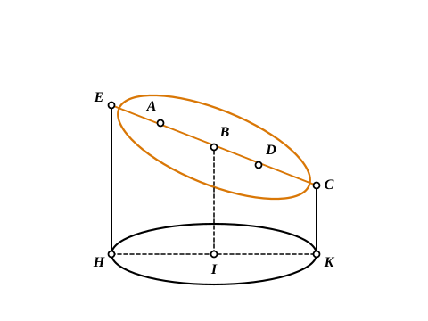
Book II · Lemma I (Tab. 4, Figs. 32–34)
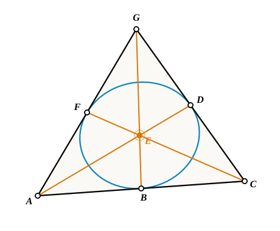
Proposition I · Theorem I (p. 38, Tab. 4, Fig. 38)
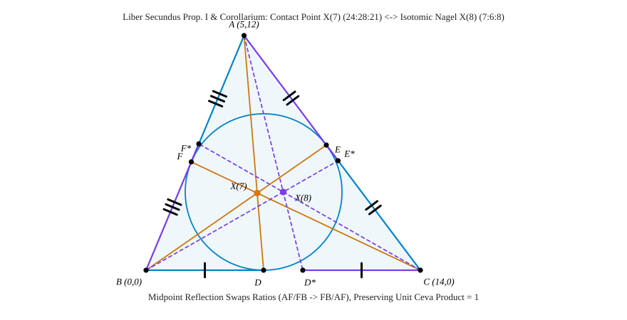
Liber Secundus editionis Mediolanensis anni MDCLXXVIII (pp. 35–60; folia 0052–0077; Tab. IV–VIII & X) continet Lemmata sex & Propositiones XXI de polygonis circulis atque ellipsibus circumscriptis, parabolae contingentibus, triangulis sibi mutuo inscriptis, ac nouo instrumento pro distantijs metiendis.
Proposition II · Theorem II (p. 39, Tab. 4, Figs. 32–34)
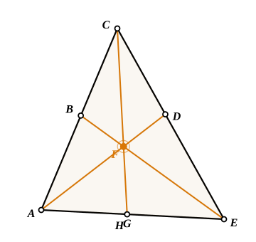
Proposition III · Theorem III (p. 39, Tab. 5, Fig. 39)
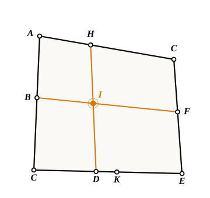
Proposition IV · Theorem IV (p. 40, Tab. 5, Fig. 40)
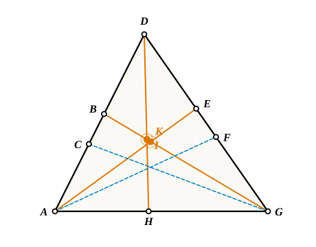
Proposition V · Theorem V (pp. 40–41, Tab. 5, Fig. 41)
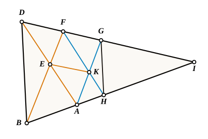
Proposition VI · Theorem VI (pp. 41–43, Tab. 5, Fig. 42)
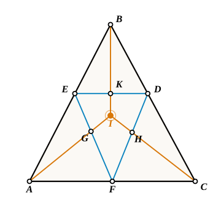
Proposition VII · Theorem VII (pp. 43–44, Tab. 5, Figs. 43 & 45)
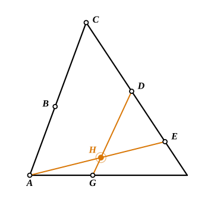
Proposition VIII · Theorem VIII (p. 44, Tab. 5, Fig. 46)
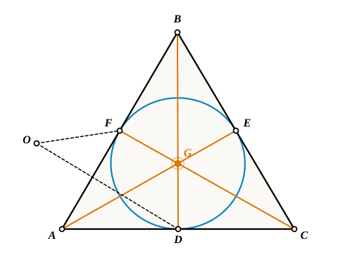
Proposition IX · Problem I (pp. 44–46, Tab. 5, Fig. 44)
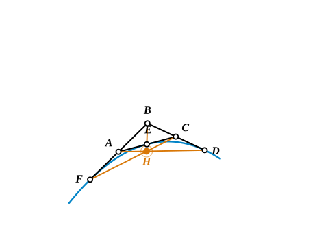
Proposition X · Theorem IX (p. 47, Tab. 6, Fig. 50)
Proposition XI · Theorem X (pp. 47–48, Tab. 6, Fig. 50)
Proposition XII · Theorem XI (pp. 48–49, Tab. 6, Fig. 50)
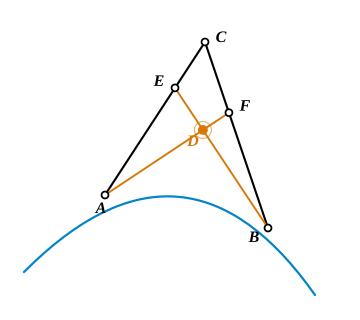
Proposition XIII · Problem II (p. 49, Tab. 6, Figs. 51 & 52)
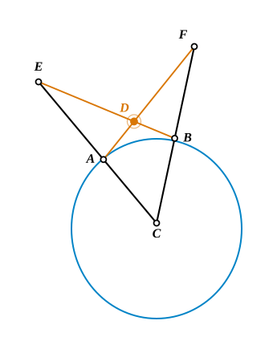
Proposition XIV · Theorem XII (pp. 49–51, Tab. 6, Figs. 52–54 & Tab. 7, Figs. 55–56)
Proposition XV · Theorem XIII (p. 51, Tab. 7, Fig. 56)
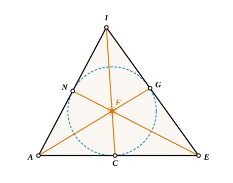
Proposition XVI · Theorem XIV (pp. 51–52, Tab. 7, Fig. 57)
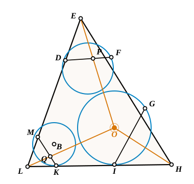
Proposition XVII · Theorem XV (p. 53, Tab. 8, Fig. 62)
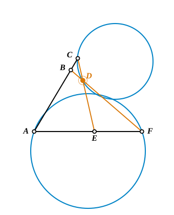
Proposition XVIII · Theorem XVI (p. 53, Tab. 7, Fig. 59)
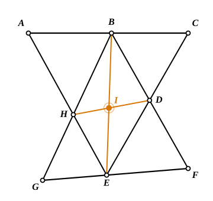
Proposition XIX · Problem III (pp. 54–57, Tab. 8, Figs. 63–66)
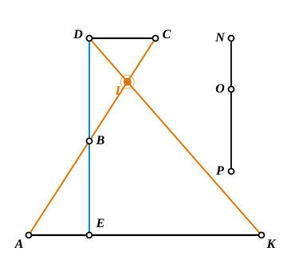
Proposition XX · Theorem XVII (p. 58, Tab. 8, Fig. 67)
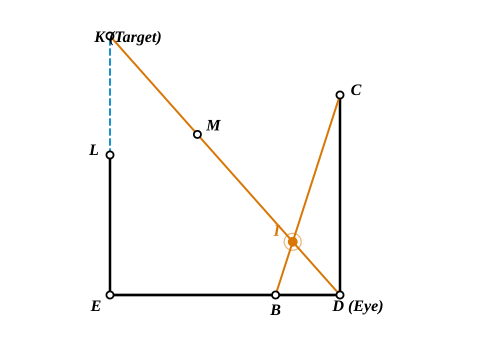
Proposition XXI · Theorem XVIII (p. 59, Tab. 8, Fig. 67)